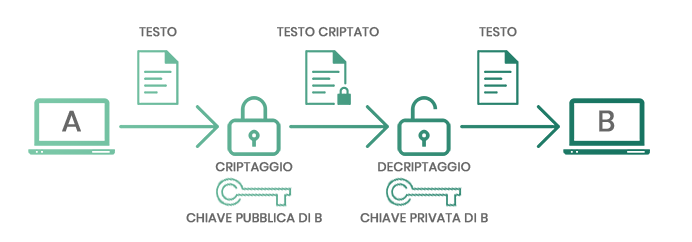

PROGETTAZIONE E REALIZZAZIONE DI UN WEBSITE SU CRIPTOVALUTE
Introduzione →
Le criptovalute sono monete virtuali decentralizzate in quanto non rientrano sotto il controllo di istituti finanziari o governi e vengono scambiate in modalità peer-to-peer, ovvero tra due dispositivi informatici senza necessità di un intermediario finanziario.
Nonostante siano state create principalmente con l'intento di funzionare come metodo di pagamento, non rientrano nella distinta nozione di “moneta elettronica”, la quale invece, consiste in una forma di archiviazione di valore monetario preesistente e in uno strumento di pagamento, entrambi ancorati a valute aventi corso legale e fisicamente costituiti da un supporto magnetico/elettronico; ad oggi quuindi rappresentano un’alternativa alle valute tradizionali.
Analizzando l’etimologia della parola “Criptovaluta”, si evidenzia come il termine sia formato da due componenti: "cripto" e "valuta", indicando quindi una "valuta nascosta", accessibile e utilizzabile esclusivamente attraverso un codice informatico specifico, noto come chiave pubblica e chiave privata.

Fonte:Consob. Consob.it
La criptovaluta non ha una forma fisica e per tale ragione viene spesso definita "virtuale". Viene creata e scambiata esclusivamente attraverso mezzi telematici, rendendo impossibile trovare bitcoin o altre criptovalute in formato cartaceo o metallico.
Per comprendere a pieno la definizione di criptovaluta, le sue caratteristiche e peculiarità risulta fondamentale fare un passo indietro, accennando alla storia della sua formazione, definendo una panoramica della tecnologia sottostante e effettuando un’attenta analisi delle opportunità di mercato ad essa correlate.
Fonte:Forbes. link:Forbes.it
Fonte background:Freepik. link:freepik.com